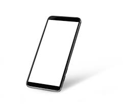

Установить лимиты на время, проведенное в Интернете и на использование устройств.
Искать новые способы общения с окружающим миром, в том числе с людьми, чтобы уменьшить зависимость от социальных сетей и мессенджеров.
Планирование времени без использования технологий, чтобы расслабиться и отдохнуть.
Разнообразить свои интересы и занятия, чтобы не ограничиваться только использованием технологий.
Регулярные перерывы и отключение смартфона, чтобы не утомлять глаза и разум.
Старайтесь быть более осознанными в отношении использования технологий, и задавайте себе вопросы, когда чувствуете, что становитесь слишком зависимыми.
